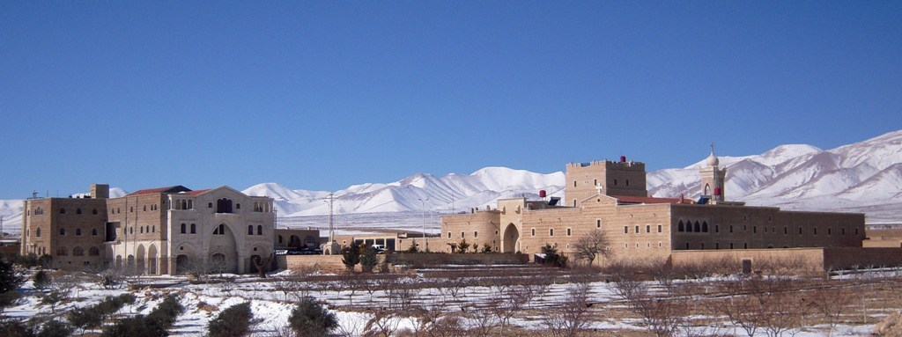
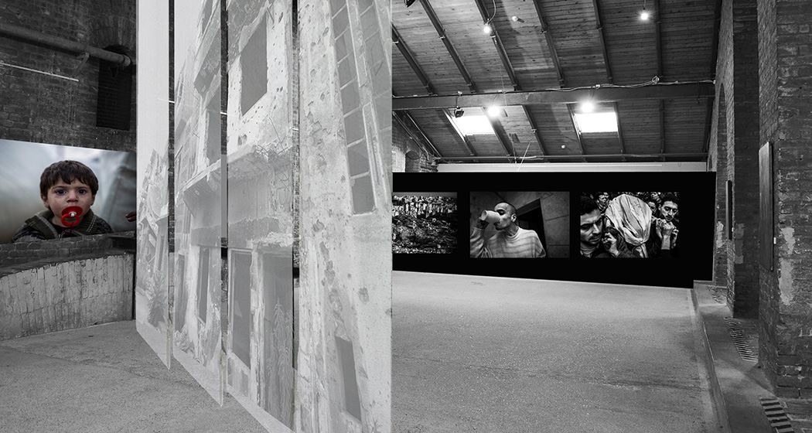

<!doctype html>
<html lang="hu">
  <head>
    <!-- Required meta tags -->
    <meta charset="utf-8">

    
    <!-- My CSS -->
    <link rel="stylesheet" href="page.css">
    
    <title>Segítség Szíriában</title>
  </head>
  
  <body>
    <header>
        <div id="cim">
          
          <h1>Őrizzük<br/>testvéreinket!</h1>
          <hr id="cim_alatti_vonal">
          <p class="idezet">„Ha szenved az egyik tag,<br/>valamennyi együtt szenved vele” </p>
          <p class="kepala">(1Kor 12,26)</p>
        </div>
        
        <div id="bevezeto">
          <hr class="vastag" style="height: 4px;">
          <p>A Közel-Keleten a véres összecsapások a mindennapok részévre váltak. A keresztények számának csökkenése kétségbeejtő méreteket öltött az elmúlt évek során. Ha ez a folyamat nem áll meg, akkor a kereszténység, ott és onnan, véglegesen eltűnik, ahol a bölcsője ringott. 2018. Adventjén a Magyar Máltai Szeretetszolgálat országos kampányt indít, amelynek címe, elnevezése: Őrizzük testvéreinket! Kérjük, nyíljék imára minél több ajak, és írják le támogató gondolataikat, imáikat. Néhány sort, vagy akár, csak egy szót. Küldjék el üzeneteiket nekünk, és mi vállaljuk, hogy átadjuk a szíriai Damaszkusztól 30 km-re található, a Feldarabolt Szent Jakabról elnevezett Mar Yakub kolostor elöljárójának.</p>
          <hr>
        </div>

    </header>

   <nav>
     
     <div id="hamburger"><div></div><div></div><div></div></div>
     <div id="menu">
       <ul>
       <a href="#videok"><li>Videók</li></a>
       <a href="#haboru"><li>A háború</li></a>
       <a href="#segitseg"><li>A segítség</li></a>
       <a href="#kozosseg"><li>A közösség</li></a>
       <a href="#imadtsag"><li>Imádságot kérünk</li></a>
       <a href="#kiallitas"><li>A kiállítás</li></a>
       <a href="#maltaiak"><li>A máltaiak</li></a>
     </ul>
    </div>
    
   </nav>
    
    <article id="tartalom">  
      <div id="haboru" class="hatter">
      <section>
      
        <h2>A háború<hr></h2>
        <p>
          2010-ben az úgynevezett „arab tavasz” háborús, forradalmi, változásokat hozó eseményei láncreakciót váltottak ki az arab világ számos országában. Részben annak hatására 2011–2012-ben polgárháború tört ki Szíriában, mélyen megosztva, egymás ellen fordítva az ország politikai, vallási és civil szereplőit. Fegyveres összecsapások kezdődtek, amelyek aztán az egész országra kiterjedtek, de különösen az északi és keleti területekre. Daraa, Homsz, Tartusz, Palmüra, Damascus és Rakka városai, ókori emlékei az elsők között kerültek a drámai események középpontjába. Nemritkán teljes városrészek semmisültek meg. <br>
          Aleppó korábban virágzó metropoliszának keleti részét pedig szinte porig bombázták. A közel 5 milliós lakossága 2 millióra zsugorodott. Mára jóllehet a szíriai kormányerők (a nyugatról érdeklődőket megosztó módon) a várost és az ország jelentős részét visszafoglalták és kontroll alatt tartják, de a hatalmas kiterjedésű romváros „szellemfalai” között még mindig előfordulnak fegyveres összecsapások, valamint rengeteg az akna, a fel nem robbant gránát, lövedék; az épületek omladoznak, emeletek hullnak alá egy-egy nagyobb esőzést követően.
        </p>
        <p class="kiemeles">
           Mindmáig sok a sérült – ellátásuk azonban annál bizonytalanabb. A város keleti részében egészségügyi, higiénés szolgáltatások, víz, villany a mai napig nincsenek, vagy erősen hiányosak. Az orvosok, az ápolók, az egészségügyi és más szakemberek a támadások áldozataivá váltak, vagy a gyakran havi 30 dolláros fizetéssel járó állások helyett otthonaik elhagyására kényszerültek. A világ jelentős részét pedig túlságosan elfoglalja a vita, a vélelmezett bűnösök, politikai és vallási szereplők külső értékelése.  
        </p>
      </section>
      </div>
     
      <div id="segitseg" class="hatter">
      <section >
          <h2>A segítség<hr></h2>
            <p>
                A Magyar Máltai Szeretetszolgálat hosszú ideje működik együtt e szerzetesi közösséggel. Imádságban támogatja, humanitárius és fejlesztési eszközökkel segíti programjaikat. E közös munkának kiemelt projektje a 2016-ban körvonalazódott, majd 2017-ben elkezdett kórházfejlesztés Kelet-Aleppó talán legszegényebb, Al-Nayrab nevű városrészében. A harcok következtében ma több százezer ember él nyíltan elérhető egészségügyi szolgáltatás nélkül. Közös munkánk eredményeképpen 2016-ban némileg kibővítettük a meglévő kórház épületét, fejlesztettük technikai kapacitásait. Aleppó város bombázása miatt azonban a keleti rész egészségügyi intézményeinek jelentős része megsemmisült. Így ma ez az egyetlen intézmény, amely nyílt, ingyenes orvosi ellátást biztosít az itt élőknek. A hiányzó űrt továbbá mobil egységek, konténerkórházak töltik be, közel 200 000 ember napi egészségügyi szükségleteit biztosítva.
            </p>
            <p class="kiemeles">
                E pozitív folyamatot és növekvő terhelést tapasztalva 2017-ben úgy döntöttünk, hogy új kórházi szárnnyal bővítjük a meglévő épületet, duplájára növelve ezzel annak kapacitását. Új szakorvosi ellátó helyiségeket építettünk, férőszámot növeltünk. E program a Magyar Máltai Szeretetszolgálat egyik legjelentősebb nemzetközi vállalkozása. Az új szárny 2018 év végén nyitja meg kapuit.  
            </p>
            <p>
                Az Aleppó körül izolált, elzárt falvakba azonban továbbra se jut el egészségügyi szolgáltatás, orvos, ápoló. Az ott élők gyógyszer és rendszeres orvosi segítség nélkül élnek. Ezért a Magyar Máltai Szeretetszolgálat úgy döntött, hogy évtizedes tapasztalatokra építve mobil orvosi (úgynevezett MOR-os) ellátást biztosít: ezért a Mar Yakub közösségével együttműködve 2018-tól mobil orvosi rendelőt működtetünk a környező falvakban. Szakképzett önkéntes és hivatásos mentős, ápoló vagy orvos kollégák a vidéki lakosságot látogatják, ahová egészségügyi szolgáltatás másként nem jutna el. Egyéni higiénés eszközöket, gyógyszert, kötszert osztanak. Közel 8000 családdal, összesen mintegy 40 000 egyéni rászorulóval tartanak folyamatos kapcsolatot. A kórházi ellátáson és mobil szolgálaton kívül rövid egészségügyi és életmentő tanfolyamokat, kurzusokat szerveznek, ugyanis máig mindennaposak a fel nem robbant lőszerek, gránátok miatti véletlen sérülések.
            </p>
      </section>
          </div>
      
          <div id="kozosseg" class="hatter">
            <section>
                <h2>Egy közösség<hr></h2>
                <div class="nagy_kepkeret">
                    
                </div>
                
                <p>
                  Az eredetileg libanoni származású karmelita nővér, Agnes Mariam de la Croix, 1994-ben elhatározta, hogy újjáépíti a Damaszkusztól 30 kilométerre található és akkor még romokban állt, Feldarabolt Szt. Jakabról (421) elnevezett Mar Yakub kolostorát. Elhatározta, hogy egy keleti monasztikus hagyományokban gyökerező, de modern szellemiségű, befogadó, karitativitásra épülő görögkeleti, melkita szerzetesi közösséggel tölti meg azt. A hely rövid idő alatt virágzásnak indult, hamar megtelt hivatásokkal, vonzó „mikrokörnyezetet” hoztak létre az alapítók. A közösség egyik legfőbb karizmája a karitativitás. Így nem volt nehéz a Magyar Máltai Szeretetszolgálat és e sivatagi lelki központ egymásra találása.
                </p>
                <p>
                  A 2011–2012-ben kitört szíriai polgárháború azonban alapjaiban változtatta meg az ország és lakosságának életét. Emiatt a kolostor szokásos rendje is, az ima, a közösségi élet és a munka is jelentősen átalakult. Vezetői az elsők között keresték fel a háború kitörésekor súlyos támadásokat szenvedett Homsz rászoruló lakosságát, és juttattak be segélycsomagokat, élelmiszert. Befogadták az árván maradt, csellengő gyermekeket. Később e humanitárius szerepvállalás vált életük lényegévé. Ismert és elismert szereplőkké váltak a szíriai háborúban harcoló felek számára, egyaránt megbecsülik őket a felkelők és kormányerők is. Egyetlen célnak a kárvallott lakosság megsegítését tekintik, így minden féllel együttműködésre kényszerülnek, ezzel alkalmanként komoly politikai és biztonsági támadásoknak kitéve önmagukat. Az elnyomott és üldözött keresztényekkel szembeni atrocitások ellen hangosan szólalnak fel a nyugati sajtóban: a Maaloula kolostora elleni támadás után az elsők között látogattak oda, és a kivégzett keresztény szerzetesek szentté avatása ügyében is aktívak (maguk gyűjtötték össze a szinte még füstölgő puskagolyókat, hogy azokat a Szentszéknek átadhassák, kezdeményezve a kanonizációjukat). Aleppóban, Homszban, Rakkában és a leginkább terhelt területeken hiánypótló segélyezési munkát végeznek a helyi egyházakkal és más közösségekkel együttműködve. 
                </p>
                <p class="kiemeles">
                  Az általuk működtetett egészségügyi szolgáltatások emberek ezreinek jelentik Kelet-Aleppóban, Homszban és másutt is az egyetlen elérhető orvosi szolgáltatást. Élelmiszer- és gyógyszerszállítmányaik a legeldugottabb, háború sújtotta területekre is elérnek. A nyugati nemzetközi szervezetek segélyfolyosóinak helyi támogatói.
                </p>
            </section>
            </div>
            
            <div id="imadtsag" class="hatter">
            <section>
                <h2>Imádságot kérünk<hr></h2>
                <p>
                    A közel-keleti keresztények számának csökkenése kétségbeejtő méreteket öltött az elmúlt években. A kereszténység ősforrásának tekinthető Libanonban, Szíriában, Jordániában vagy éppen Irakban a naponta ismétlődő véres összecsapások mára a mindennapok részeivé váltak. A profán gyökerű, az államok vagy radikális szerveződések közötti feszültségekből fakadó harcok mellett a legtöbb támadás a keresztényeket éri, amellyel kapcsolatban a nyugat máig közömbös. Szíriában a különböző felekezetek korábban példaértékű békében éltek egymással, mára a keresztények 40-50% eltűnt. Irakban ez a szám még drasztikusabb: a keresztények 80% tűnt el az országból. Ha ez a folyamat nem áll meg, a kereszténység lassan eltűnik annak ősforrásából.
                </p>
                <p>
                    „Ha szenved az egyik tag, valamennyi együtt szenved vele” – olvashatjuk Pál apostol korinthusiakhoz írt első levelében, amely egyben egyik vezérgondolata is kampányunknak. Néhány éve, a szíriai polgárháború egyik aktív időszakában, Aleppóban járt a Magyar Máltai Szeretetszolgálat néhány munkatársa. Ellátogattak Qara városának már sokat emlegetett „Jakab-konventjébe” is, ahol együtt imádkoztak az ott élő keleti keresztény közösség tagjaival. Döbbenetes volt a szembesülés, hogy az elmúlt öt évben alig fordult meg náluk nyugati utazó: az elmondásuk és vendégkönyvük alapján kevesebb mint tízen. Mindennapi küzdelmeik mellett kifejezték mély fájdalmukat, hogy úgy tűnik számukra, latin (nyugati) keresztény testvéreik elfelejtették őket. 
                </p>
                <p>
                    2009-ben, a Magyar Máltai Szeretetszolgálat 20 éves évfordulója alkalmával, adománygyűjtésbe kezdett a szervezet, amelynek a „Magyarországnak van a legnagyobb szíve” nevet adták. Az akció révén arra kértük az embereket: varrjanak otthon egy szívet, és azt vigyék el a Szeretetszolgálat lakóhelyükhöz legközelebbi irodájába. Ezzel is bizonyítva a hazai társadalom összefogásának lehetőségét, erejét. Akkor, több százezren fejezték ki ilyen módon szolidaritásukat, együttérzésüket, szeretetüket. Az összegyűjtött szívekből Budapesten a Szent István Bazilika előtt formáltunk egy hatalmasat. Most sem pénzadományt kérünk; azt igyekszünk megoldani saját és támogatóink forrásaiból. Ismét arra kérjük Önöket, mutassuk meg újra, hogy Magyarországnak van a legnagyobb szíve! 
                </p>                
                <p>
                    Kampányunkban hazánk lakosságának egészét szólítjuk meg. Mindazokat, akik együttéreznek e közel-keleti keresztényekkel, vagy általában a háború által kárvallottakkal. Arra kérjük, biztatjuk az üldözött, sokat szenvedő közel-keletiek sorsa iránt aggódókat, hogy fejezzék ki együttérzésüket sorsuk iránt. Minden magyar egyenként nem lehet tevékeny részese a terepi folyamatoknak, az élet helyi valóságának, amely igazi háborús fronthelyzet. De imádságban, jókívánságban, lelki cselekedetekben erre lehetőségünk van, mi több: kötelességünk is. 
                </p>
                <div class="kiemeles">
                <p>                      
                    Arra kérjük az aggódó, lelki közösséget vállalókat, hogy írják le rövid támogató gondolataikat. Néhány sort, vagy akár csak egy-egy szót. A lényeg, hogy kifejezzük, gondolunk rájuk, szeretjük őket, osztozunk fájdalmukban. Küldjék el üzeneteiket postán, Facebookon vagy e-mailben, és mi vállaljuk, hogy minden üzenetet a maga fizikai valójában adunk át a szíriai Damaszkusztól 30 kilométerre található, a perzsa Feldarabolt Szt. Jakabról (421) elnevezett Mar Yakub kolostor elöljárójának.
                </p>
                <p>Mutassuk meg ismét, hogy Magyarországnak van a legnagyobb szíve! Mutassuk meg, hogy gondolunk rájuk, fejezzük ki, hogy lélekben együtt szenvedünk velük, és nincsenek egyedül.</p>
                </div>
                <div class="piros">
                <h4 style="margin-bottom: 25px;">         
                    Kérjük, küldjék el üzeneteiket<br/>
                    az alábbi címek egyikére<br/>
                    és mi vállaljuk, hogy azokat<br/>
                    eljuttatjuk a Mar Yakub kolostorba!
                </h4>
                <p>
                   <span style="float: left; width: 230px; font-weight: bold;">Ha elektronikus címre írna:</span >
                   <span  style="display: inline-block; width: 400px; margin-bottom: 15px;"><a href="mailto:imadsagotkerunk@maltai.hu">imadsagotkerunk@maltai.hu</a></span ><br>

                   <span  style="float: left; width: 230px; font-weight: bold;">Facebookon is üzenhet:</span >
                   <span  style="display: inline-block; width: 400px; margin-bottom: 15px;">-</span><br>

                   <span  style="float: left; width: 230px; font-weight: bold;">Postai cím esetében:</span >
                   <span  style="display: inline-block; width: 400px;"> 
                    MMSZ Egyesület <br>
                    A borítékra feltétlenül írják rá: „Imágságot kérünk” <br>
                    1125 Budapest, Szarvas Gábor út 58-60.
                   </span >
                </p>
                </div>
            </section>
            </div>          
            
            <div id="kiallitas" class="hatter">
            <section>
                <h2>A kiállítás<hr></h2>
                <div class="nagy_kepkeret">
                        
                    </div>
                <p>
                  Kampányunk másik fő eleme az a fotókiállítás, amely a szíriai polgárháború borzalmait, illetve az arra adott karitatív válaszokat, a kiút lehetőségét mutatja be a Magyar Máltai Szeretetszolgálat munkáján keresztül az érdeklődők számára.
                </p>
                <p>
                    A budapesti Szent István Bazilika Lovagtermében megrendezésre kerülő tárlaton Solymári Dániel humanitárius szakember és Bielik István fotóriporter fényképeiből mutatunk be bőséges válogatást. Solymári Dániel képei a segélymunka, amíg Bielik István anyaga pedig a háború aspektusait hozzák testközelbe. A karakterében egyedi interaktív kiállításon máshol még sosem mutatott képeket ismerhetnek meg a látogatók, akik testközelből nyerhetnek bepillantást Aleppó porig rombolt városrészébe és a forradalom alatt nyújtott humanitárius munkába. 
                </p>
                <div class="piros">
                    <h4>Helyszín:</h4> 
                    <p style="margin: 5px 0px 30px 0px;"> Szent István Bazilika Lovagreterme, <br>
                    1051 Budapest, Szent István tér 1., <br>
                    megközelítés a főbejáraton keresztül, <span style="display: inline-block;">lifttel a kupola irányába</span></p>

                    <h4>Időpont:</h4> 
                    <p style="margin: 5px 0px 0px 0px;"> 2018. december-február</p>
                </div>                
                <p>
                    Reméljük, hogy a kiállítás közelebb hozza a térségbe zajló komplex folyamatokat, a bemutatott alkotásokon keresztül a látogatók jobban megérthetik a közel-keleti eseményeket. A tárlat a világ fájdalmaira figyelést, a világ felé nyitást hívatott erősíteni. Azt üzeni, hogy vannak olyan társadalmak, amelyek önnön nyugati nehézségeinknél súlyosabbakat élnek át. Feladatunk, hogy legyen fülünk és szívünk meghallani fájdalmaikat és helyes válaszokat adjunk segélykiáltásaikra. Hiszen az ember végső célja mindig a másik ember.
                </p>
            </section>
            </div>
            <div id="maltaiak" class="hatter">
                <section>
                    <h2>A máltaiak<hr></h2>
                    <p>
                     A Keresztelő Szent Jánosról elnevezett ispotályos lovagrendet a 11. században Jeruzsálemben alapították meg a szegény és beteg keresztes lovagok ápolására. A lovagrend Magyarországon a 12. században, II. Géza uralkodása idején telepedett meg. A Szuverén Máltai Lovagrend 1925-ben állított fel követséget Budapesten, rá három évre, 1928-ban megalakult a Magyarországi Máltai Lovagok Szövetsége. 1945 után magyarországi tevékenységük ellehetetlenült, az emigrációba kényszerült rendtagok csak 1996. január 27-én helyezték át ismét székhelyüket Budára.
                    </p>
                    <p>
                     A Magyar Máltai Szeretetszolgálat a Szuverén Máltai Lovagrend magyarországi segélyszervezete. A Szeretetszolgálat és a Máltai Lovagrend jelmondata, a "Tuitio fidei et obsequium pauperum - A hit védelme és a szegények szolgálata". 
                    </p>
                    <p>
                        A Szeretetszolgálat megalakulásának története az 1980-as évekbe nyúlik vissza. Alapítói ekkor határozták el, hogy adománygyűjtést szerveznek a rászoruló magyarországi emberek és szervezetek megsegítésére. Kezdetben orvosi műszereket gyűjtöttek németországi kórházakban, Magyarországon pedig keresték azt a helyet, illetve személyt, aki az adományokat képes eljuttatni a rászorulókhoz. Így találkoztak 1987 augusztusában Kozma Imre atyával, a Zugligeti Szent Család templom plébánosával. Idővel együttműködésük intézményes keretei is kialakultak: Magyarországon az egyik első civil szervezetként - 1989. február 4-én megalakulhatott a Magyar Máltai Szeretetszolgálat Egyesület.
                    </p>
                </section>
                </div>

          </article>
          <script src="hatter_szin.js"></script>
          <script src="hamburger.js"></script>
          </body>
</html>